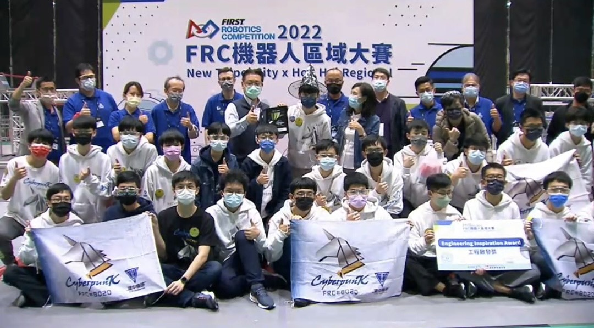
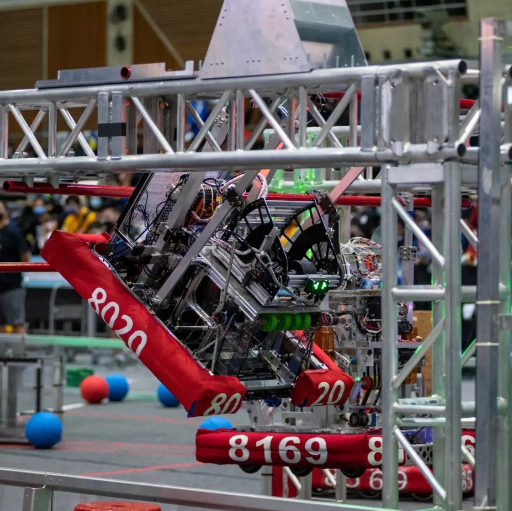

Technical Contribution
I joined the robotics team to build mechanical design, machining, and programming ability. Later, I served as programming leader, writing autonomous-period actions and parts of teleoperated behavior. Although my formal role leaned toward software, I also joined early build-season prototyping, mechanism design, and fabrication work, which helped me understand how code decisions depend on the physical robot.
Scouting and Strategy
I led the scouting team and helped develop a dedicated scouting app for match data collection. I also built Excel analysis tools to organize large match datasets quickly, supporting alliance selection and match strategy decisions. This work trained me to make decisions under time pressure while balancing quantitative evidence and field observations.
Awards
- 2022 Sacramento Regional: Finalists and Industrial Design Award.
- 2022 New Taipei City x Hon Hai Regional: Engineering Inspiration Award and Houston qualification.
- 2023 Los Angeles Regional and San Diego Regional: Excellence in Engineering Awards.

